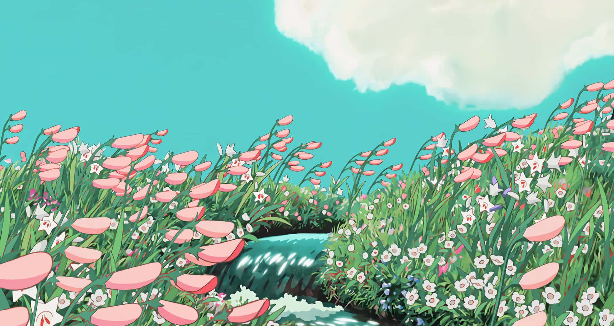
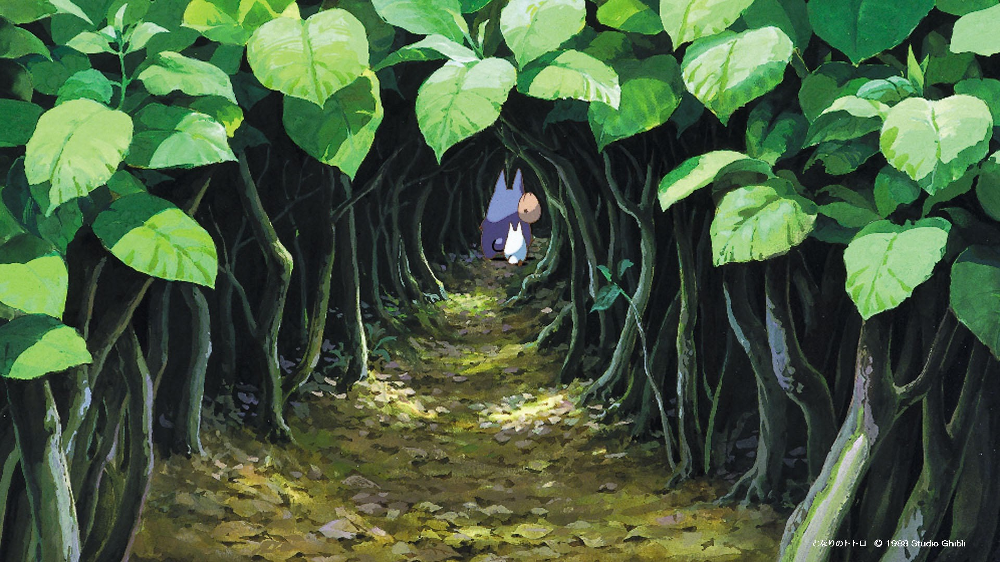
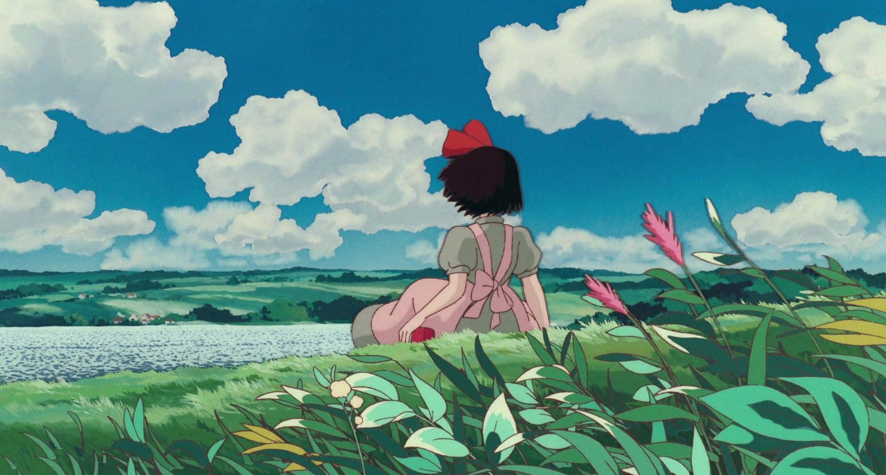
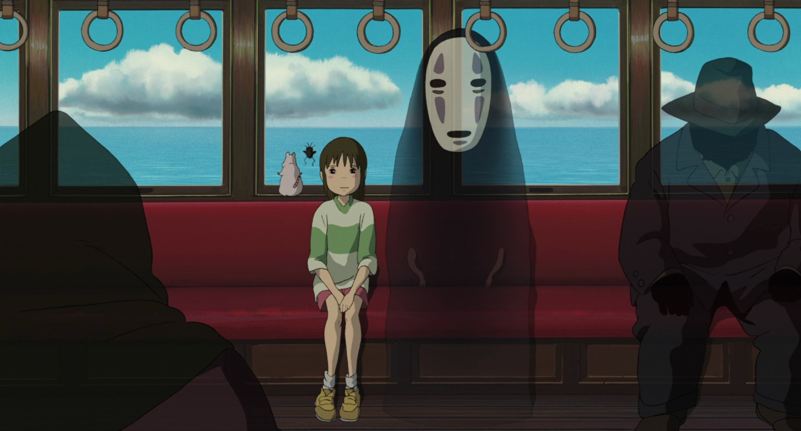
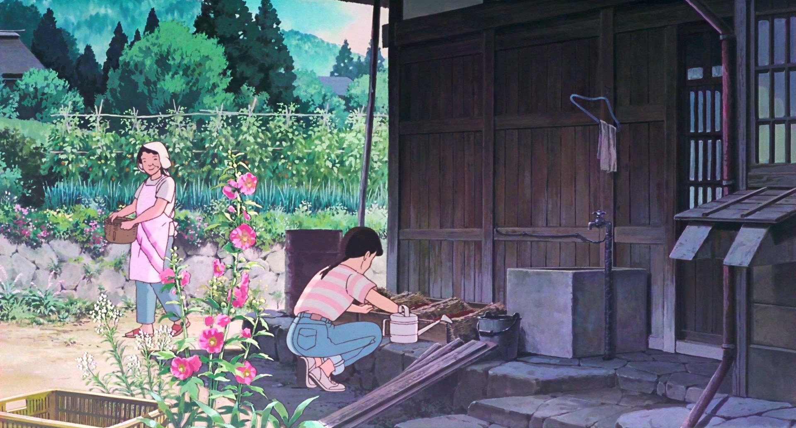
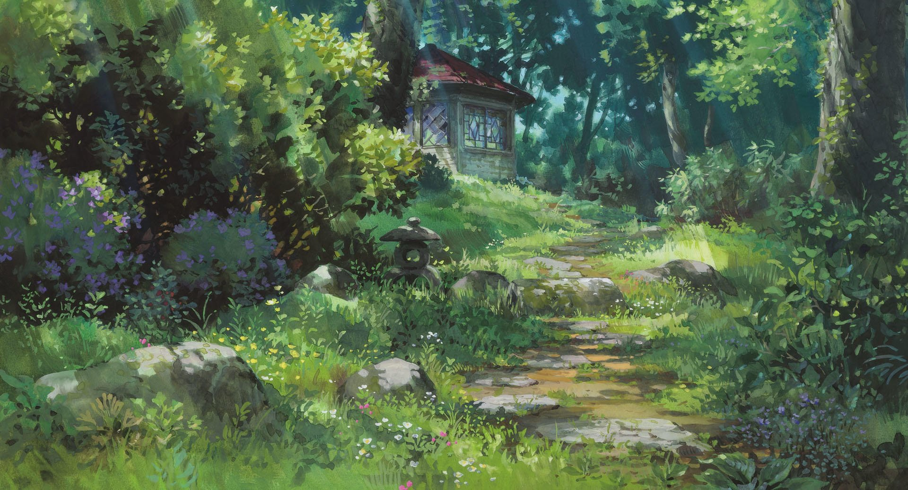
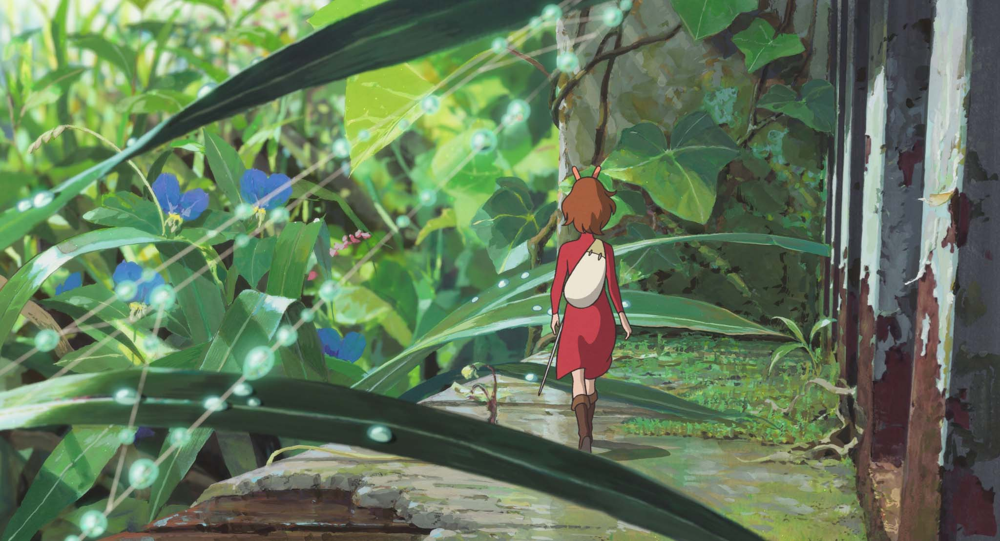
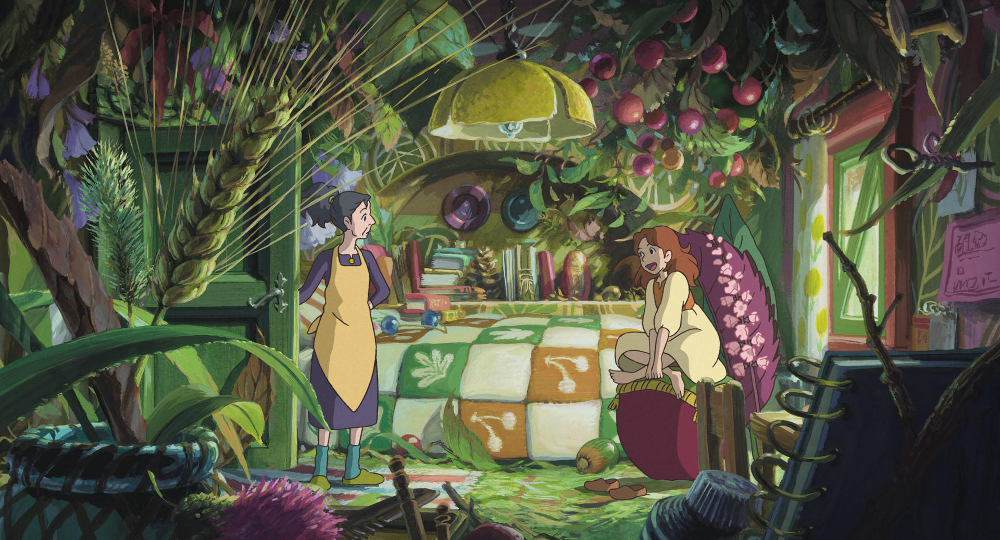
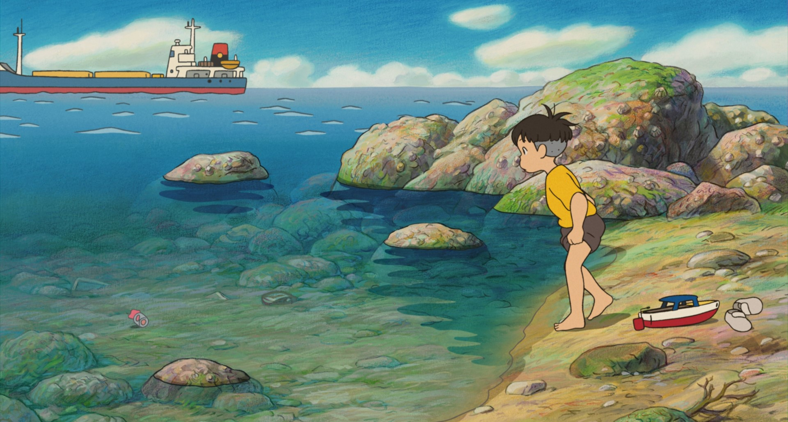

About Studio Ghibli
Studio Ghibli is a Japanese animation studio in Tokyo that started in 1985. It was founded by directors Hayao Miyazaki and Isao Takahata, along with producer Toshio Suzuki. They make lots of notable animated movies such as “My Neighbor Totoro”, "Howl's Moving Castle", and "Spirited Away."
Studio Ghibli creates animated films that aren't just one genre. While their movies often fall into the animated fantasy category, they mix in elements of drama, adventure, romance, and coming-of-age themes. You'll get a taste of everything when you watch their movies!




